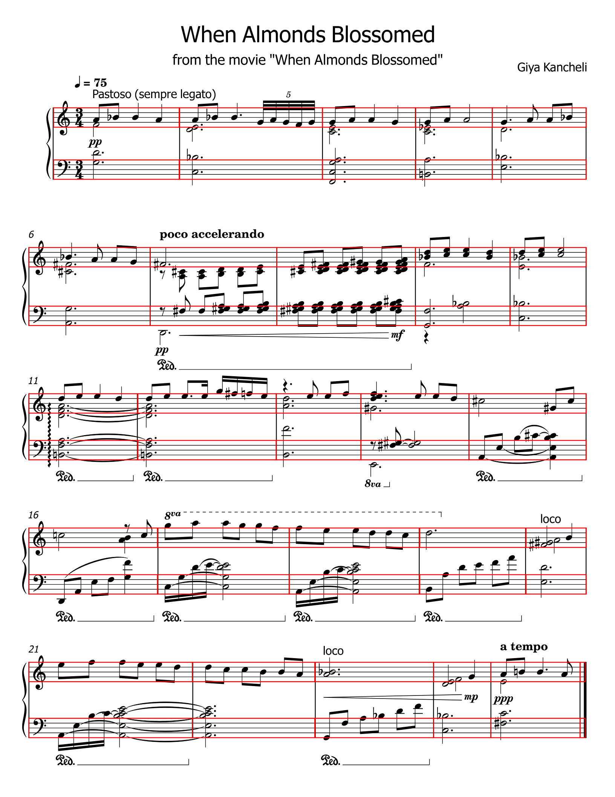
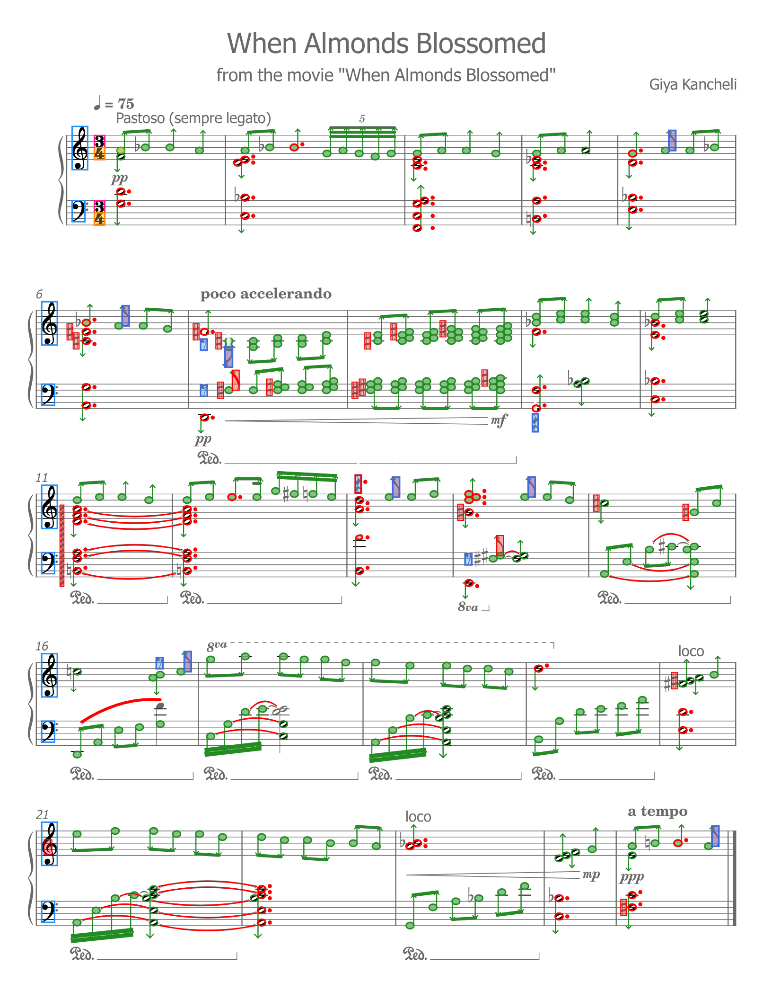
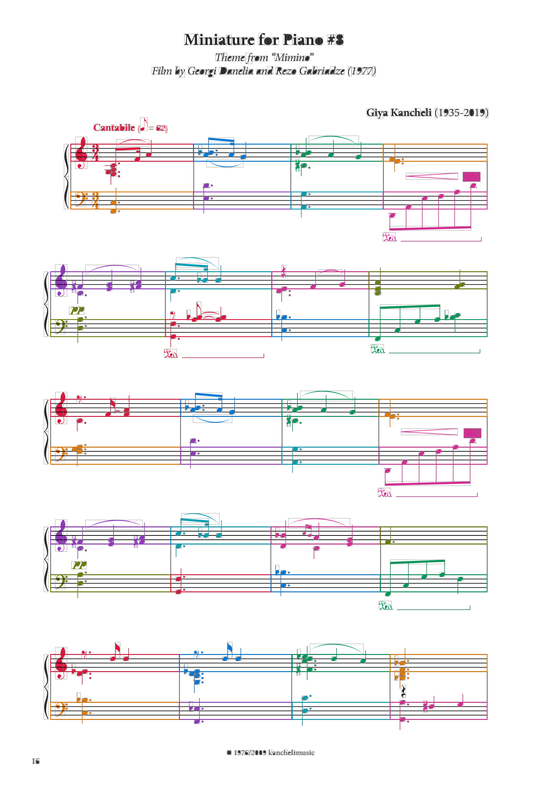
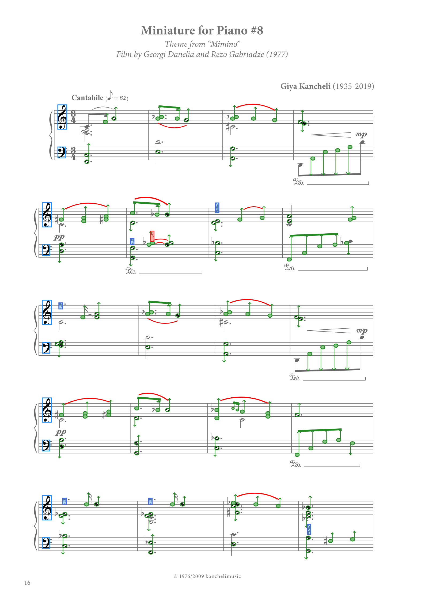

source.svg
{kind=link}
Svg.Skia source tree
<use> instances (0)


primitive SVG gallery (339)

meters: 6
clefs: 4
ledger ladders: 6
note heads: 59
accidentals: 2
rests: 21
source elements: 308
source uses: 0
lines: 1401
systems: 2
parts: 2
measures: 8
P+M primitives: 339
exported SVGs: 339
M-only: 153
physical-only: 0
music symbols: 395
structure.json
source.svg
{kind=link}
Svg.Skia source tree
<use> instances (565)


primitive SVG gallery (382)

meters: 0
clefs: 11
ledger ladders: 36
note heads: 182
accidentals: 0
rests: 10
source elements: 1110
source uses: 565
lines: 2905
systems: 5
parts: 2
measures: 12
P+M primitives: 729
exported SVGs: 382
M-only: 319
physical-only: 0
music symbols: 893
structure.json
source.svg
{kind=link}
Svg.Skia source tree
<use> instances (0)
{kind=link}

{kind=link}
primitive SVG gallery (1111)
{kind=link}

meters: 2
clefs: 10
ledger ladders: 40
note heads: 298
accidentals: 2
rests: 13
MeterResolver - 2/2
ClefResolver - 10/10
NoteBuilder - 117/301 (+18 extra)
reference checks
resolved.musicxml
source elements: 970
source uses: 0
lines: 2612
systems: 5
parts: 2
measures: 26
P+M primitives: 1111
exported SVGs: 1111
M-only: 214
physical-only: 0
music symbols: 1095
structure.json
source.svg
{kind=link}
Svg.Skia source tree
<use> instances (441)

{kind=link}

primitive SVG gallery (311)
{kind=link}

meters: 0
clefs: 10
ledger ladders: 19
note heads: 130
accidentals: 0
rests: 6
MeterResolver - 0/2
ClefResolver - 10/10
NoteBuilder - 25/152
reference checks
resolved.musicxml
source elements: 870
source uses: 441
lines: 1718
systems: 5
parts: 2
measures: 20
P+M primitives: 632
exported SVGs: 311
M-only: 225
physical-only: 0
music symbols: 688
structure.json